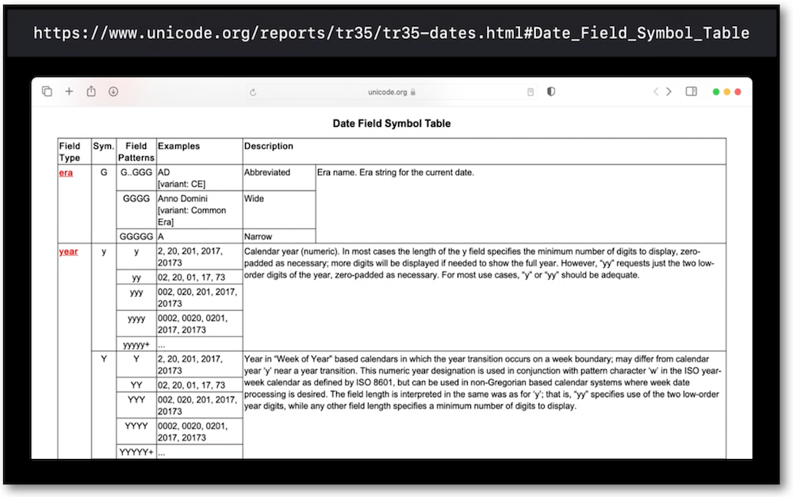

WWDC 2020: Formatters
Find hereafter a detailed summary of the above named video which belongs to a taxonomy of some WWDC footages.
The original video is available on the official Apple website (session 10160).
"Save yourself time and frustration: When you display data in your app — including dates, times, measurements, names, lists, numbers, or strings — learn how to format it correctly and provide a great experience. We'll walk you through the Formatter APIs as well as how SwiftUI works with stringsdict, and show you how they can help do the heavy lifting of formatting data. Learn about best practices and how to avoid common mistakes."
Various contents of this video are indicated hereunder:
Most of the illustrations are parts of the Apple presentations and may be available at the Resources section inside the Overview sheet of each video.
Hereafter, the underlined elements lead directly to the playback of the WWDC video at the appropriate moment.
Dates and times #
To have an overall view of the formatters efficiency, a couple of examples are revealed.
The first one highlights the power of the predefined styles in dateformatter...
... while others point out the impressive performance of the custom templates...

... whose one huge reference for dates is a Unicode technical report.

It's crucial to check the results in different languages when the fields are chosen, even if the order isn't important at all.

To avoid any risk of misunderstanding, it's highly recommended not to set the template directly into the dateFormatter property.
Dates can be also set up step by step with some of its components.

Range of time is easily displayed with customed formatter.

Relative time pointers can be build instead of indicating a complete date.
Measurements #
Relying on the Weather App, efficacy of the formatters is outlined regarding some measurements (temperature, speed and pressure)...
... while many other general or custom units can be supported as well.
Names #
The components of the name formatting are fully introduced in this part...

... with a deep dive into the use of monograms.

Lists #
In iOS 14, the ListFormatter is updated to abide by the grammatical rules of many languages.
Numbers #
The numbers formatting regarding decimal numbers is effortless...

... and specific symbols don't hinder in any way the clarity of the display.

Strings #
The union of text elements AND a stringdict file are important in SwiftUI to easily localize strings...

... that an example of a photos folder points out.